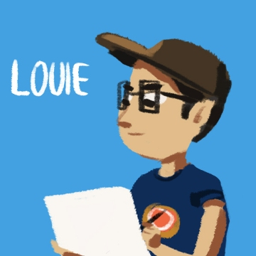

Our Story
Waffle Friday Studios began in early Spring 2012, when two friends and roommates came up with a novel idea for a game. They discussed their ideas every Friday over Belgian sugar waffles, and thus the studio's name was born.
The Team
|  | Louie is the artist behind all aspects of design and animation. He does it all—animation, paintings, caricatures, cartoons, colors, and more. He is a civil engineering major and rising senior at Tufts University. Louie is currently interning at CloudKid animation studio in Boston for the summer.
|
Dan is the programmer, responsible for making the art come to life. From game programming to web design, he implements the creative ideas from top to bottom. He is a math and computer science major and rising senior at Tufts University. Dan is currently completing a summer internship at Apple Inc. in California.
|